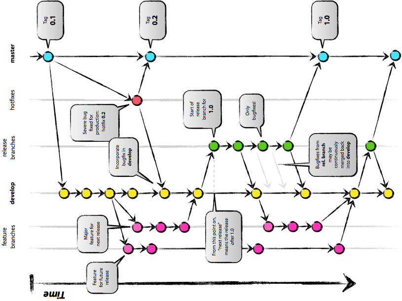

| z, ? | toggle help (this) |
| space, → | next slide |
| shift-space, ← | previous slide |
| d | toggle debug mode |
| ## <ret> | go to slide # |
| c, t | table of contents (vi) |
| f | toggle footer |
| g | toggle follow |
| r | reload slides |
| n | toggle notes |
| p | run preshow |
| P | toggle pause |
| s | choose style |
Oh, let me count the reasons!
$ git clone \
git@github.com:NeutronRobotics/bowler_style_information.git
Cloning into 'bowler_style_information'...
remote: Counting objects: 20, done.
remote: Compressing objects: 100% (14/14), done.
remote: Total 20 (delta 1), reused 16 (delta 1)
Receiving objects: 100% (20/20), 6.42 KiB, done.
Resolving deltas: 100% (1/1), done.
$ cd bowler_style_information
$ git status
# On branch master
nothing to commit, working directory clean
Git is a bit wierd...
vim xyz] modified: edited, but the edits have not been recordedgit add xyz] staged: the edits (not the whole file) are staged to be committedgit commit] comitted: the edits are stored as a commit in your local repository$ git add .
or
$ git add xyz
or
$ git add --patch xyz
or
$ git add --edit xyz
$ git commit
$ git reset HEAD xyz
$ git checkout xyz
$ git push remote-name remote-branch-name
In the following sections, you will see the phrase replay the changes. To understand what this means, think of the Git timeline as a series of beeps on a audio file, where each beep is a commit. When you replay changes over an existing set of changes, it is like playing two of the beeping audio files at the same time, and then saving the results. The resulting file is the interleaving of the two sets of beeps.
To create and then switch:
$ git checkout -b some-new-branch
To switch later:
$ git checkout some-existing-branch
To delete a (merged) branch:
$ git branch -d branch-name
To force-delete any branch
$ git branch -D branch-name
Pulls the changes from another set of commits (a branch, etc) into the current branch, replaying the current new commits onto the current branch and then recording the results in a new commit
$ git merge other-branch-name
(or from a remote -- rebasing is preferred to this, though)
$ git pull remote remote-branch
Alters history, changing history without making a new commit
Replay another branch over this one:
$ git rebase branch-name
Pull a new set of changes from a remote:
$ git pull --rebase remote remote-branch
Manipulate the timeline directly:
$ git rebase --interactive revision-specifier
Merging is like sticking a signpost on the timeline saying "here git, there are some other changes for you to consider over the history of time"
Rebasing is like saying: "what do you mean git, Julius Caesar always had a laser pistol?, I don't know what you're talking about. Pfft, changing history!"
Use merging when you want an official record of the timeline changes, such when you want to put your changes from a feature branch into develop
Use rebasing when you want to seamless change history, such as when you pull changes from the GitHub repository
Use rebasing when you want to change how your commits looked in the past, such as when you want to clean up a series of commits or fix an issue in an older commit.
HEAD@{0})Puts the currents in a separate pocket to be taken out later (numbered in a stack-like manner):
$ git stash
(or only the unstaged changes)
$ git stash --keep-index
Apply the contents of the stash:
$ git stash apply [stash@{number}]
Apply then remove:
$ git stash pop [stash@{number}]
Remove:
$ git stash remove [stash@{number}]
Start a branch from a stash:
$ git stash branch branch-name [stash@{number}]
List all stashes:
$ git stash list
Show information about a stash:
$ git stash show [stash@{number}]
Like bookmarks in time...
A tag is really just a name for a particular point in history
List all tags:
$ git tag
Search all tags with filter:
$ git tag -l 'pattern'
Create a lightweight tag:
$ git tag tag-name [revision]
Create an annotated tag:
$ git tag -a tag-name [revision]
Note that you must explicitly push tags to remotes:
$ git push remote-name tag-name
You can also create and verify GPG-signed tags, if you really want to:
$ git tag -s tag-name [revision]
$ git tag -v tag-name


Somewhere in between...
Always there to comfort you...
To make your life more organized...
When you are working on a local machine or personal GH fork, you may have a series of commits which looks like this:
This is ok for while you are developing...
This kind of commit series should not be pushed to the central (upstream) GH repository. Before you push or submit a pull request, you should rebase the changes to look like this:
If part 2 breaks existing functionality without part three, then there should really only be three parts:
or "How to convey meaning without really trying"
MAJOR.MINOR.PATCH (with some stuff after)MAJOR means incompatible API changeMINOR means backwards-compatible API changePATCH means no API change-label (alpha, beta, rc)-label.number (e.g. -beta.2 or -rc.1)+metadata (e.g. +sha.12345, comes after label if present)See the README.md file in the various directories
in the NeuronRobotics/bowler_style_information.